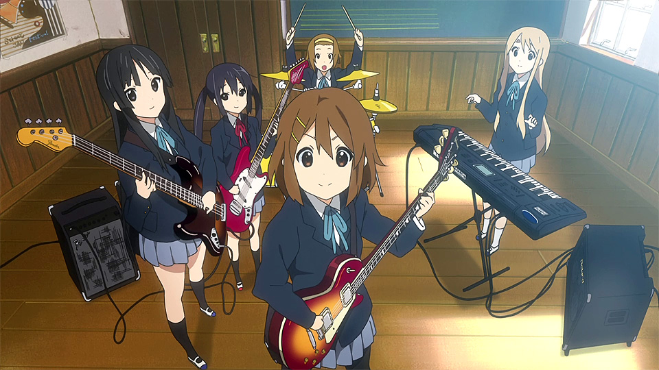

けいおん!
あらすじ
唯・澪・律・紬が入学した時点で、桜が丘高校軽音部は前年に部員全員が
卒業したため部員数が0となり、新たに4人の部員が入部しなければ廃部となる
状況だった。そのため軽音部に入部を希望していた田井中律は自ら発起人となり、
幼なじみの秋山澪をなかば強引に入部させ、合唱部の練習場所と間違えて二人の
いた音楽室にやってきた琴吹紬も勧誘し、部員数を3人にする[注 4]。そこに
軽音部を「軽い音楽をする部活」と勘違いした平沢唯が4人目として入部したこと
で、軽音部はなんとか廃部を免れることができた。さらに翌年、新入生の中野梓が
入部したことで部員数は5人となる。
